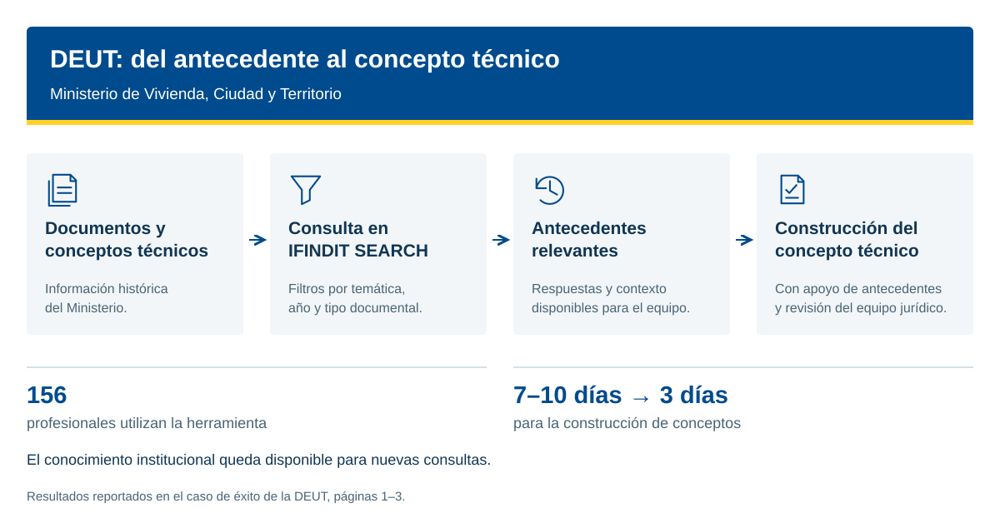

De 7–10 días a 3 días para construir conceptos técnicos.
La Dirección de Espacio Urbano y Territorial del Ministerio de Vivienda, Ciudad y Territorio utiliza la búsqueda inteligente de IFINDIT para consultar documentos, recuperar antecedentes y dar continuidad al conocimiento del equipo.
Construcción de conceptos
Profesionales que usan la herramienta
Peticiones por profesional al mes
Años de información. Poco tiempo para encontrarla.
La DEUT atiende el 80% de las consultas técnicas que llegan al Ministerio, según el caso documentado. La información necesaria estaba dispersa entre documentos históricos y el conocimiento de los profesionales. Investigar antecedentes, redactar conceptos y coordinar su revisión exigía búsquedas manuales y consultas entre compañeros.
Una consulta conecta documentos y antecedentes.
Con IFINDIT, el equipo accede al histórico de documentos y conceptos técnicos y afina los resultados por temática, año y tipo de documento. En una búsqueda de “licenciamiento”, los filtros permitieron pasar de 5.398 resultados a los cinco o seis oficios necesarios para la consulta.
Más continuidad en cada respuesta.
El caso reporta una reducción del tiempo de construcción de conceptos de 7–10 días a 3 días. También describe un mejor acceso a respuestas previamente revisadas por el equipo jurídico, sus normas citadas y el contexto de cada actuación. El conocimiento queda disponible para que otros profesionales puedan reutilizarlo.
La adopción también forma parte del resultado.
La experiencia destaca la capacitación de los usuarios, la atención a necesidades operativas concretas y la medición de resultados. La herramienta favoreció una forma de trabajo en la que los antecedentes se consultan como conocimiento institucional compartido.
Resultados reportados en el caso de éxito de la DEUT, páginas 1–3. Consultar documento original (PDF)
Cómo se utiliza la información

Recorrido descrito en el caso del Ministerio.
Descargar diagrama SVG
Hablemos de su información.
Cuéntenos qué necesita encontrar, analizar u organizar. Conozca IFINDIT con el equipo de Creangel.